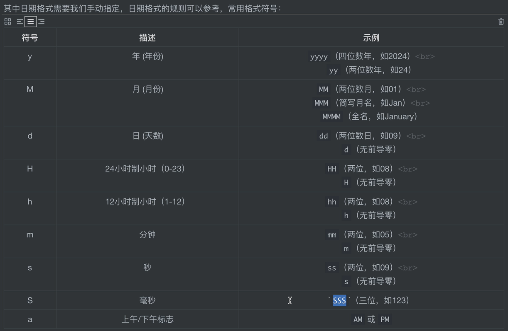

Java 常用工具类：Math、Arrays 与日期格式化
- 工具类 :
数学工具类 :
通过Math类调用函数 : pow , min , max , abs , sin , cos ;
Java重载魅力时刻 : Java 中的 Math.abs() 方法适用于所有数值类型，无论是整数还是小数，正数还是负数。 floor( 向下取整 ) , round( 四舍五入 )
使用 MPI可以实现找到 派 ;
Math.logq( x ) ; 以q为底 , x 的对数,
Random 随机数生成类 ; 创建出对象后 x.nextInt( 范围 ) ;
- 数组工具类 :
- Arrays类 : 实现直接打印数组 ;
- Array . sort( arr ,x , y ) ; 实现( 对 x 到 y 位置的数字 )排序 ;
- Array.fill( brr , x )将brr数组中所有元素修改为数值 x ;
- Arrays.copyOfRange(arr , 2 , 5); 实现拷贝 2 - 5 位置之间的元素
- Arrays.copyOf( 数组 , 拷贝的元素长度 ) ; 若是超出原数组大小会自动补零
- Arrays.binarySearch(arr , 1222); 在arr数组中查找数值 , 若是未找到该数值 , 会返回负数( -4 , 在索引为3的位置插入查找数据 ) ;
- Arrays.deepToString() 实现打印内外层的数组 ( 适合用于多维数组 ) ;
- 针对多维数组 使用deepEquals 实现比较是否相等( 深层次判断 ) ; 内部实现的函数包装的是Object 类型
- 日期相关类 :
- 区分Date 和 Calendar 差别 : Date是表示时间戳 , 而Calendar 是具体表示出来时间的具体年份 , 月 , 日
日期一般是以时间戳的形式存在 , 是自1970年1月1日00:00:00起的时刻毫秒数 , 当时间戳为1000时 ,实际上过了1秒 ;
时区 : 地球划分区域 , 实现标准化时间 , 共24时区 , 每精度15度划分一个时区 , 由英国的本初子午线开始划起 ;
中国东8区 : 本初子午线 0 点的时候, 中国是 8 点 ;
UTC : 协调世界时 , 同步世界时间 , 中国 UTC + 8 ;
Date 类 创建类对象 , date.tolocaleString() [ 被弃用 ]; 实现播报当地时间
getTime获取当前时间戳 ; 精确到毫秒o
Date date = new Date();
System.out.println(date.getTime());
获取格林威治时间的时间戳 : System.out.println(u.toGMTString());
Date date = new Date(125 , 11 , 17 ) ;
System.out.println(date);
年份 1900 + 输入年份 , 月份类似下标 1 - 11 , 日期1 - 31 ;
Date date = new Date(125 , 11 , 17 , 2 , 2 ,2 ) ;可以精确到秒 ;
构造都过时 , 也无法设置时区 ;
- 实现比较时间的先后 :
输出true , false :
sout( date1.after( date2 ) ) ;
sout( date.before( date1 ) ) ;
输出 -1( 早 ) 0 ( 相等 ) 1( 晚 ) :
sout( date2.compareTo(date1) ) ;
Calendar cal = Calendar.getInstance();
cal.set(2025 , Calendar.JANUARY , 16 , 12 , 2 , 2 ) ;
System.out.println(cal.getTime()); //获取当前时间
cal.set(Calendar.YEAR , 2026) ; //实现具体修改
public final void set(int year, int month, int date, int hourOfDay, int minute,
int second)
{
set(YEAR, year);
set(MONTH, month);
set(DATE, date);
set(HOUR_OF_DAY, hourOfDay);
set(MINUTE, minute);
set(SECOND, second);
}
一堆方法 自己摸索
cal.getweeksInWeekYear() 获取基于周的年份 : 将一年中的第一个周作为一年的开始 , 最后一周的周日为年的结束
System.out.println(cal.getFirstDayOfWeek()); 获取到一周的第一天
- DateFormat抽象类 实现将日期和字符串之间相互转化 , 抽象无法直接创建对象 ,
常利用子类 SimpleDateFormat 实现创建
创建对象 ：( 提供方法 )DateFormat formatter = new SimpleDateFormat("yyyy-MM-dd HH:mm:ss");
System.out.println(formatter.format(new Date()));实现按上述格式输出
输出的规则 : 实现字符和对应的数据之间进行转化

Date parse = formatter.parse("2026-01-01 24:00:00");
System.out.println(parse);